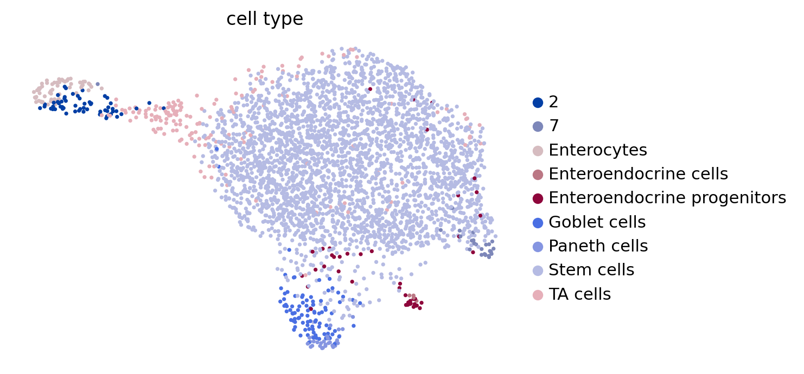
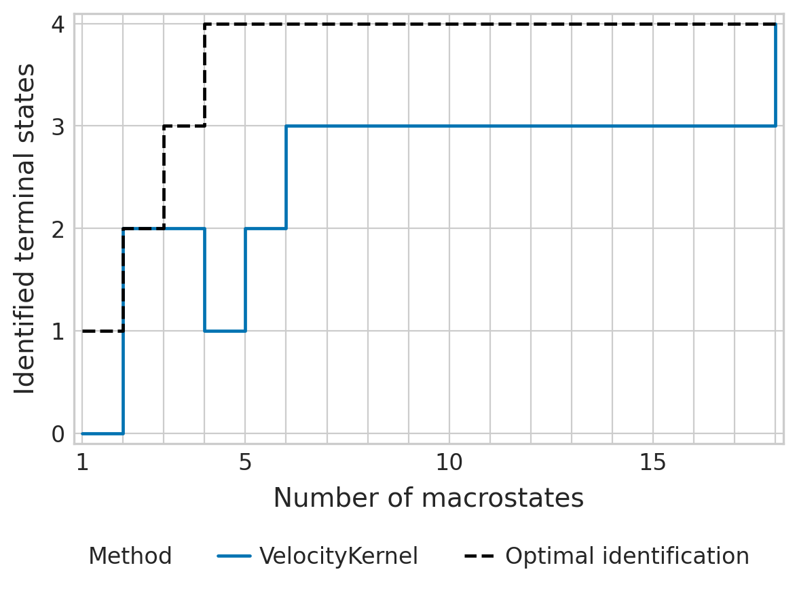
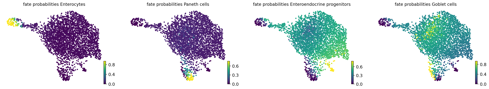

Intestinal organoid differentiation - RNA velocity with EM model#
Estimates RNA velocity with scVelo’s EM model and analyses corresponding fate mapping.
Library imports#
import sys
import numpy as np
import pandas as pd
import matplotlib.pyplot as plt
import mplscience
import seaborn as sns
import cellrank as cr
import scanpy as sc
import scvelo as scv
from anndata import AnnData
from cr2 import get_state_purity, get_var_ranks, plot_state_purity, running_in_notebook
sys.path.extend(["../../../", "."])
from paths import DATA_DIR, FIG_DIR # isort: skip # noqa: E402
Global seed set to 0
General settings#
sc.settings.verbosity = 3
scv.settings.verbosity = 3
cr.settings.verbosity = 2
scv.settings.set_figure_params("scvelo")
SAVE_FIGURES = False
if SAVE_FIGURES:
(FIG_DIR / "labeling_kernel").mkdir(parents=True, exist_ok=True)
FIGURE_FORMAT = "pdf"
(DATA_DIR / "sceu_organoid" / "results").mkdir(parents=True, exist_ok=True)
Constants#
N_JOBS = 8
Data loading#
adata = sc.read(DATA_DIR / "sceu_organoid" / "processed" / "raw.h5ad")
adata = adata[adata.obs["labeling_time"] != "dmso", :].copy()
adata = adata[~adata.obs["cell_type"].isin(["Tuft cells"]), :]
adata.obs["labeling_time"] = adata.obs["labeling_time"].astype(float) / 60
adata.layers["unspliced"] = adata.layers["unlabeled_unspliced"] + adata.layers["labeled_unspliced"]
adata.layers["spliced"] = adata.layers["unlabeled_spliced"] + adata.layers["labeled_spliced"]
umap_coord_df = pd.read_csv(DATA_DIR / "sceu_organoid" / "processed" / "umap_coords.csv", index_col=0)
umap_coord_df.index = umap_coord_df.index.astype(str)
adata.obsm["X_umap"] = umap_coord_df.loc[adata.obs_names, :].values
del umap_coord_df
adata
/tmp/ipykernel_1102372/2797837506.py:5: ImplicitModificationWarning: Trying to modify attribute `.obs` of view, initializing view as actual.
adata.obs["labeling_time"] = adata.obs["labeling_time"].astype(float) / 60
AnnData object with n_obs × n_vars = 3452 × 9157
obs: 'experiment', 'labeling_time', 'cell_type', 'well_id', 'batch_id', 'log10_gfp', 'som_cluster_id', 'monocle_branch_id', 'monocle_pseudotime'
var: 'ensum_id'
uns: 'cell_type_colors'
obsm: 'X_umap_paper', 'X_umap'
layers: 'labeled', 'labeled_spliced', 'labeled_unspliced', 'total', 'unlabeled', 'unlabeled_spliced', 'unlabeled_unspliced', 'unspliced', 'spliced'
Data preprocessing#
adata.obs["cell_type_merged"] = adata.obs["cell_type"].copy()
adata.obs["cell_type_merged"].replace({"Enteroendocrine cells": "Enteroendocrine progenitors"}, inplace=True)
# filter s.t. at least `min_counts` per labeling time point?
scv.pp.filter_and_normalize(
adata,
min_counts=50,
layers_normalize=["X", "labeled", "unlabeled", "total", "unspliced", "spliced"],
n_top_genes=2000,
)
adata
Filtered out 736 genes that are detected 50 counts (spliced).
Normalized count data: X, labeled, unlabeled, total, unspliced, spliced.
Extracted 2000 highly variable genes.
Logarithmized X.
/vol/storage/philipp/code/scvelo_dev/scvelo/preprocessing/utils.py:705: DeprecationWarning: `log1p` is deprecated since scVelo v0.3.0 and will be removed in a future version. Please use `log1p` from `scanpy.pp` instead.
log1p(adata)
AnnData object with n_obs × n_vars = 3452 × 2000
obs: 'experiment', 'labeling_time', 'cell_type', 'well_id', 'batch_id', 'log10_gfp', 'som_cluster_id', 'monocle_branch_id', 'monocle_pseudotime', 'cell_type_merged', 'initial_size_unspliced', 'initial_size_spliced', 'initial_size', 'n_counts'
var: 'ensum_id', 'gene_count_corr', 'means', 'dispersions', 'dispersions_norm', 'highly_variable'
uns: 'cell_type_colors', 'log1p'
obsm: 'X_umap_paper', 'X_umap'
layers: 'labeled', 'labeled_spliced', 'labeled_unspliced', 'total', 'unlabeled', 'unlabeled_spliced', 'unlabeled_unspliced', 'unspliced', 'spliced'
sc.tl.pca(adata, svd_solver="arpack")
sc.pp.neighbors(adata, n_neighbors=30, n_pcs=30)
scv.pp.moments(adata, n_neighbors=None, n_pcs=None)
computing PCA
on highly variable genes
with n_comps=50
finished (0:00:01)
computing neighbors
using 'X_pca' with n_pcs = 30
finished: added to `.uns['neighbors']`
`.obsp['distances']`, distances for each pair of neighbors
`.obsp['connectivities']`, weighted adjacency matrix (0:00:06)
computing moments based on connectivities
finished (0:00:01) --> added
'Ms' and 'Mu', moments of un/spliced abundances (adata.layers)
if running_in_notebook():
scv.pl.scatter(adata, basis="umap", color="cell_type", legend_loc="right")

Parameter inference#
scv.tl.recover_dynamics(adata, n_jobs=N_JOBS)
recovering dynamics (using 8/14 cores)
Global seed set to 0
Global seed set to 0
Global seed set to 0
Global seed set to 0
Global seed set to 0
Global seed set to 0
Global seed set to 0
Global seed set to 0
finished (0:00:24) --> added
'fit_pars', fitted parameters for splicing dynamics (adata.var)
Velocity#
scv.tl.velocity(adata, mode="dynamical")
computing velocities
finished (0:00:00) --> added
'velocity', velocity vectors for each individual cell (adata.layers)
CellRank#
vk = cr.kernels.VelocityKernel(adata, xkey="Ms", vkey="velocity").compute_transition_matrix()
ck = cr.kernels.ConnectivityKernel(adata).compute_transition_matrix()
combined_kernel = 0.8 * vk + 0.2 * ck
Computing transition matrix using `'deterministic'` model
Using `softmax_scale=11.9861`
Finish (0:00:02)
Computing transition matrix based on `adata.obsp['connectivities']`
Finish (0:00:00)
Estimator analysis#
estimator = cr.estimators.GPCCA(combined_kernel)
estimator.compute_schur(n_components=20)
if running_in_notebook():
estimator.plot_spectrum(real_only=True)
Computing Schur decomposition
When computing macrostates, choose a number of states NOT in `[6, 8, 10, 12, 14, 16, 19]`
Adding `adata.uns['eigendecomposition_fwd']`
`.schur_vectors`
`.schur_matrix`
`.eigendecomposition`
Finish (0:00:00)
Macrostates#
terminal_states = ["Enteroendocrine progenitors", "Enterocytes", "Goblet cells", "Paneth cells"]
cluster_key = "cell_type"
if (DATA_DIR / "sceu_organoid" / "results" / "tsi-em_model.csv").is_file():
tsi_df = pd.read_csv(DATA_DIR / "sceu_organoid" / "results" / "tsi-em_model.csv")
estimator._tsi = AnnData(tsi_df, uns={"terminal_states": terminal_states, "cluster_key": cluster_key})
tsi_score = estimator.tsi(n_macrostates=18, terminal_states=terminal_states, cluster_key=cluster_key)
else:
tsi_score = estimator.tsi(n_macrostates=18, terminal_states=terminal_states, cluster_key=cluster_key)
estimator._tsi.to_df().to_csv(DATA_DIR / "sceu_organoid" / "results" / "tsi-em_model.csv", index=False)
print(f"TSI score: {tsi_score:.2f}")
TSI score: 0.71
/vol/storage/miniconda3/envs/cr2-py38/lib/python3.8/site-packages/anndata/_core/anndata.py:121: ImplicitModificationWarning: Transforming to str index.
warnings.warn("Transforming to str index.", ImplicitModificationWarning)
# For nice name in figure legend
estimator.kernel.__class__.__name__ = "VelocityKernel"
palette = {"VelocityKernel": "#0173b2", "Optimal identification": "#000000"}
if SAVE_FIGURES:
fpath = FIG_DIR / "labeling_kernel" / f"tsi-em_model.{FIGURE_FORMAT}"
else:
fpath = None
with mplscience.style_context():
sns.set_style(style="whitegrid")
estimator.plot_tsi(palette=palette, save=fpath)
plt.show()

estimator.compute_macrostates(n_states=18, cluster_key="cell_type")
if running_in_notebook():
estimator.plot_macrostates(which="all", basis="umap", legend_loc="right", title="", size=100)
if SAVE_FIGURES:
fpath = FIG_DIR / "labeling_kernel" / f"umap_colored_by_cr_macrostates_scvelo.{FIGURE_FORMAT}"
estimator.plot_macrostates(which="all", basis="umap", title="", legend_loc=False, size=100, save=fpath)
Computing `18` macrostates
WARNING: The following terminal states have different number of cells than requested (30): {'Stem cells_12': 28, 'Stem cells_6': 21}
Adding `.macrostates`
`.macrostates_memberships`
`.coarse_T`
`.coarse_initial_distribution
`.coarse_stationary_distribution`
`.schur_vectors`
`.schur_matrix`
`.eigendecomposition`
Finish (0:01:14)
macrostate_purity = get_state_purity(adata, estimator, states="macrostates", obs_col="cell_type")
print(f"Mean purity: {np.mean(list(macrostate_purity.values()))}")
if running_in_notebook():
if SAVE_FIGURES:
fpath = FIG_DIR / "labeling_kernel" / f"macrostate_purity_rna_velo.{FIGURE_FORMAT}"
else:
fpath = None
palette = dict(zip(estimator.macrostates.cat.categories, estimator._macrostates.colors))
order = estimator.macrostates.cat.categories.sort_values().to_list()
plot_state_purity(macrostate_purity, palette=palette, fpath=fpath, order=order, format=FIGURE_FORMAT)
Mean purity: 0.876984126984127
estimator.set_terminal_states(states=["Enterocytes", "Paneth cells", "Enteroendocrine progenitors", "Goblet cells"])
if running_in_notebook():
estimator.plot_macrostates(which="terminal", basis="umap", legend_loc="right", title="", size=100)
if SAVE_FIGURES:
fpath = FIG_DIR / "labeling_kernel" / f"terminal_state_purity_scvelo.{FIGURE_FORMAT}"
estimator.plot_macrostates(which="terminal", basis="umap", title="", legend_loc=False, size=100, save=fpath)
Adding `adata.obs['term_states_fwd']`
`adata.obs['term_states_fwd_probs']`
`.terminal_states`
`.terminal_states_probabilities`
`.terminal_states_memberships
Finish`
terminal_state_purity = get_state_purity(adata, estimator, states="terminal_states", obs_col="cell_type")
pd.DataFrame({"purity": terminal_state_purity.values(), "method": "CellRank 1"}, index=terminal_state_purity).to_csv(
DATA_DIR / "sceu_organoid" / "results" / "terminal_state_purity_cr1.csv"
)
print(f"Mean purity: {np.mean(list(terminal_state_purity.values()))}")
if running_in_notebook():
if SAVE_FIGURES:
fpath = FIG_DIR / "labeling_kernel" / f"terminal_state_purity_rna_velo.{FIGURE_FORMAT}"
else:
fpath = None
palette = dict(zip(estimator.terminal_states.cat.categories, estimator._term_states.colors))
order = estimator.terminal_states.cat.categories.sort_values().to_list()
plot_state_purity(terminal_state_purity, palette=palette, order=order, fpath=fpath, format=FIGURE_FORMAT)
Mean purity: 0.6749999999999999
Fate probabilities#
estimator.compute_fate_probabilities()
Computing fate probabilities
Adding `adata.obsm['lineages_fwd']`
`.fate_probabilities`
Finish (0:00:00)
[0]PETSC ERROR: ------------------------------------------------------------------------
[0]PETSC ERROR: Caught signal number 13 Broken Pipe: Likely while reading or writing to a socket
[0]PETSC ERROR: Try option -start_in_debugger or -on_error_attach_debugger
[0]PETSC ERROR: or see https://petsc.org/release/faq/#valgrind and https://petsc.org/release/faq/
[0]PETSC ERROR: configure using --with-debugging=yes, recompile, link, and run
[0]PETSC ERROR: to get more information on the crash.
Abort(59) on node 0 (rank 0 in comm 0): application called MPI_Abort(MPI_COMM_WORLD, 59) - process 0
if running_in_notebook():
estimator.plot_fate_probabilities(same_plot=False, size=50, basis="umap")

Driver analysis#
goblet_markers = (
pd.read_csv(DATA_DIR / "sceu_organoid" / "processed" / "goblet_markers.csv")["Gene"].str.lower().tolist()
)
goblet_markers = adata.var_names[adata.var_names.str.lower().isin(goblet_markers)]
goblet_regulators = (
pd.read_csv(DATA_DIR / "sceu_organoid" / "processed" / "goblet_regulators.csv")["Gene"].str.lower().tolist()
)
goblet_regulators = adata.var_names[adata.var_names.str.lower().isin(goblet_regulators)]
goblet_and_paneth_regulators = (
pd.read_csv(DATA_DIR / "sceu_organoid" / "processed" / "goblet_and_paneth_regulators.csv")["Gene"]
.str.lower()
.tolist()
)
goblet_and_paneth_regulators = adata.var_names[adata.var_names.str.lower().isin(goblet_and_paneth_regulators)]
paneth_markers = (
pd.read_csv(DATA_DIR / "sceu_organoid" / "processed" / "paneth_markers.csv")["Gene"].str.lower().tolist()
)
paneth_markers = adata.var_names[adata.var_names.str.lower().isin(paneth_markers)]
eec_markers = pd.read_csv(DATA_DIR / "sceu_organoid" / "processed" / "eec_markers.csv")["Gene"].str.lower().tolist()
eec_markers = adata.var_names[adata.var_names.str.lower().isin(eec_markers)]
eec_progenitor_markers = (
pd.read_csv(DATA_DIR / "sceu_organoid" / "processed" / "eec_progenitor_markers.csv")["Gene"].str.lower().tolist()
)
eec_progenitor_markers = adata.var_names[adata.var_names.str.lower().isin(eec_progenitor_markers)]
enterocyte_markers = (
pd.read_csv(DATA_DIR / "sceu_organoid" / "processed" / "enterocyte_markers.csv")["Gene"].str.lower().tolist()
)
enterocyte_markers = adata.var_names[adata.var_names.str.lower().isin(enterocyte_markers)]
enterocyte_progenitor_markers = (
pd.read_csv(DATA_DIR / "sceu_organoid" / "processed" / "enterocyte_progenitor_markers.csv")["Gene"]
.str.lower()
.tolist()
)
enterocyte_progenitor_markers = adata.var_names[adata.var_names.str.lower().isin(enterocyte_progenitor_markers)]
gene_ranks = {terminal_state: pd.DataFrame() for terminal_state in terminal_states}
drivers = estimator.compute_lineage_drivers(
cluster_key="cell_type",
lineages=["Enteroendocrine progenitors", "Goblet cells", "Paneth cells", "Enterocytes"],
clusters=["Stem cells"],
return_drivers=True,
)
for terminal_state in terminal_states:
drivers = drivers.merge(
pd.DataFrame(drivers.sort_values(by=f"{terminal_state}_corr", ascending=False).index)
.reset_index()
.rename(columns={"index": f"Corr. rank - {terminal_state}"})
.set_index(0),
left_index=True,
right_index=True,
)
Adding `adata.varm['terminal_lineage_drivers']`
`.lineage_drivers`
Finish (0:00:00)
Goblet cells#
_df = get_var_ranks(
var_names=goblet_markers, drivers=drivers, macrostate="Goblet cells", var_type="Marker", model="EM Model"
)
gene_ranks["Goblet cells"] = pd.concat([gene_ranks["Goblet cells"], _df])
Marker towards Goblet cells for EM Model in top 100: 7 (out of 95)
_df = get_var_ranks(
var_names=goblet_and_paneth_regulators,
drivers=drivers,
macrostate="Goblet cells",
var_type="Goblet/Paneth regulator",
model="EM Model",
)
gene_ranks["Goblet cells"] = pd.concat([gene_ranks["Goblet cells"], _df])
Goblet/Paneth regulator towards Goblet cells for EM Model in top 100: 0 (out of 3)
Paneth cells#
_df = get_var_ranks(
var_names=paneth_markers, drivers=drivers, macrostate="Paneth cells", var_type="Marker", model="EM Model"
)
gene_ranks["Paneth cells"] = pd.concat([gene_ranks["Paneth cells"], _df])
Marker towards Paneth cells for EM Model in top 100: 6 (out of 18)
_df = get_var_ranks(
var_names=goblet_and_paneth_regulators,
drivers=drivers,
macrostate="Paneth cells",
var_type="Goblet/Paneth regulator",
model="EM Model",
)
gene_ranks["Paneth cells"] = pd.concat([gene_ranks["Paneth cells"], _df])
Goblet/Paneth regulator towards Paneth cells for EM Model in top 100: 0 (out of 3)
Enteroendocrine#
_df = get_var_ranks(
var_names=eec_markers,
drivers=drivers,
macrostate="Enteroendocrine progenitors",
var_type="Marker",
model="EM Model",
)
gene_ranks["Enteroendocrine progenitors"] = pd.concat([gene_ranks["Enteroendocrine progenitors"], _df])
Marker towards Enteroendocrine progenitors for EM Model in top 100: 12 (out of 82)
_df = get_var_ranks(
var_names=eec_progenitor_markers,
drivers=drivers,
macrostate="Enteroendocrine progenitors",
var_type="Progenitor marker",
model="EM Model",
)
gene_ranks["Enteroendocrine progenitors"] = pd.concat([gene_ranks["Enteroendocrine progenitors"], _df])
Progenitor marker towards Enteroendocrine progenitors for EM Model in top 100: 1 (out of 66)
Enterocytes#
_df = get_var_ranks(
var_names=enterocyte_markers, drivers=drivers, macrostate="Enterocytes", var_type="Marker", model="EM Model"
)
gene_ranks["Enterocytes"] = pd.concat([gene_ranks["Enterocytes"], _df])
Marker towards Enterocytes for EM Model in top 100: 30 (out of 170)
_df = get_var_ranks(
var_names=enterocyte_progenitor_markers,
drivers=drivers,
macrostate="Enterocytes",
var_type="Progenitor marker",
model="EM Model",
)
gene_ranks["Enterocytes"] = pd.concat([gene_ranks["Enterocytes"], _df])
Progenitor marker towards Enterocytes for EM Model in top 100: 11 (out of 12)
for terminal_state in gene_ranks.keys():
gene_ranks[terminal_state] = gene_ranks[terminal_state].sort_values(f"Corr. rank - {terminal_state}")
gene_ranks[terminal_state].to_csv(
DATA_DIR / "sceu_organoid" / "results" / f"gene_ranks_{terminal_state}-em_model.csv"
)